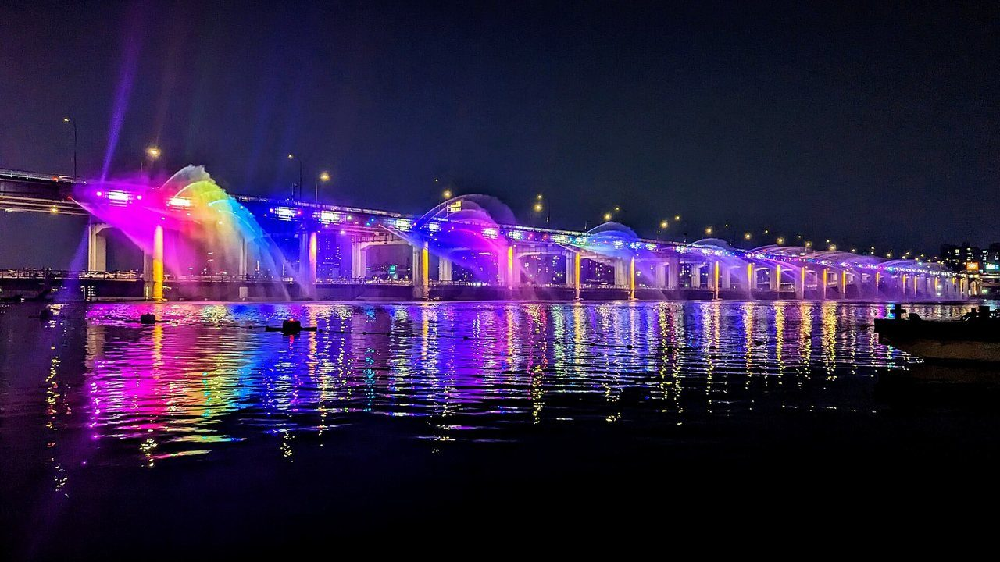

Race, Han River Parks, Seoul

Behind
Best +0:01
371W
Target 418 W-47 W
- Cadence
- 87rpm
- Heart
- 140bpm
- Speed
- 26.5km/h
Recover7 of 15
1:26
Next: · 0:45 at level 23
+0.1%
6 m climbed
4.62 km
11
Resistance / 32
Solo races your best-time ghost: position reads Ahead or Behind, and solo alone gets a Pause button. Frozen at 10:59.